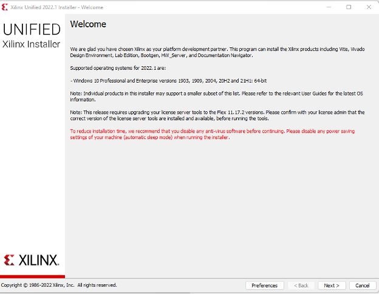
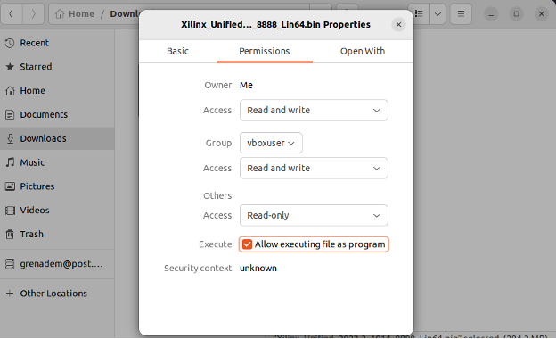
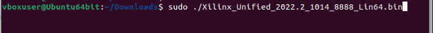
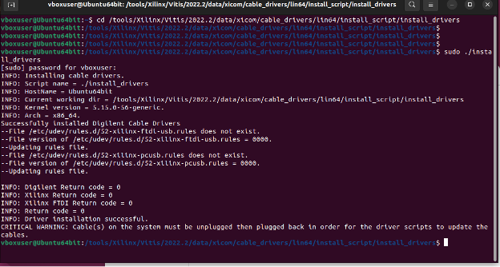

Download Software
Basic Information
In our project we will use the software called Vitis unified software platform from Xilinx It includes 2 main softwares
- Vitis – IDE for programing ther FPGA and running the code
- Vivado – for creating the hardware for the FPGA
This is a tool that combines all aspects of Xilinx® software development into one unified environment. The Vitis software platform supports both the Vitis embedded software development flow, for Xilinx Software Development Kit (SDK) users looking to move into the next generation technology, and the Vitis application acceleration development flow, for software developers looking to use the latest in Xilinx FPGA-based software acceleration.
The Vitis™ software platform consists of an integrated design environment (IDE) for interactive project development, and command-line tools for scripted or manual application development. The Vitis software platform also includes the Vivado® Design Suite for implementing the kernel on the target device, and for developing custom hardware platforms.
Download files
Go to Vitis (SW Developer) and download the installer for your operating system
We worked with version 2022.2: (Linux and windows versions)
Installation Tutorial (Windows)
- open .EXE file
- click next
 - Login to your account of xilinx (if you don’t have, register one)

- Choose Vitis

- In the next screen, we need to choose the products we want to install. For the full installation you will need 245 GB disk space
 If you don’t have the space requirement, the only products we need to choose for our project are:
If you don’t have the space requirement, the only products we need to choose for our project are:

For the SoCs, you can also remove Zynq-7000 and Zynq UltraScale + RFSoC because our board is Zynq UltraScale + MPSoC. The vitis Model composer is also optional so if you still don’t have enough disk space, buy a new one
- Click i agree to all the license agreements and then install regualry\
Installation Tutorial (Linux)
Download the installer from the download page only this time choose the one for linux
-
Right click on the bin file → properties → Permissions → Check the Execute option
 -
Open Terminal inside the folder contains the bin file (Or open terminal then cd to the path contains the bin file)
-
Run the following commands: (To get the file name easy)
ls -ltr
-
Then type the command: sudo ./File_Name For example:
 -
then type your password and then it should open the xilinx installer

-
Then its the same like for the windows.
-
Open terminal and type in the command (check the vitas version):
source <Vitis_install_path>/Vitis/2022.2/settings64.sh
In my case the path was:
/tools/Xilinx/Vitis/2022.2/settings64.sh
Then to lunch the vitis ide type in
vitis
(For the other apps like vivado, vitis_hls do the same just source to the right path)
Installing Cable Drivers (Only for linux)
During the installtion we can’t select the option to install the cable drivers and it needs to be done manually:
cd <install drivers path>
in my case it was
<Vitis Install>/data/xicom/cable_drivers/lin64/install_script/install_drivers/

then run the command:
sudo ./install_drivers

Possible Error
If the installer hang on the "Generating installed device list" step Open terminal and type in the command:
sudo apt-get install libtinfo5
as documented here